넓은 화면 · 1280
아래 가운데 조작부 · 줄이지 않음
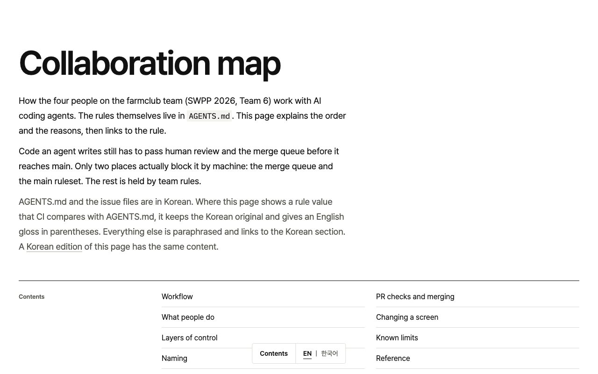

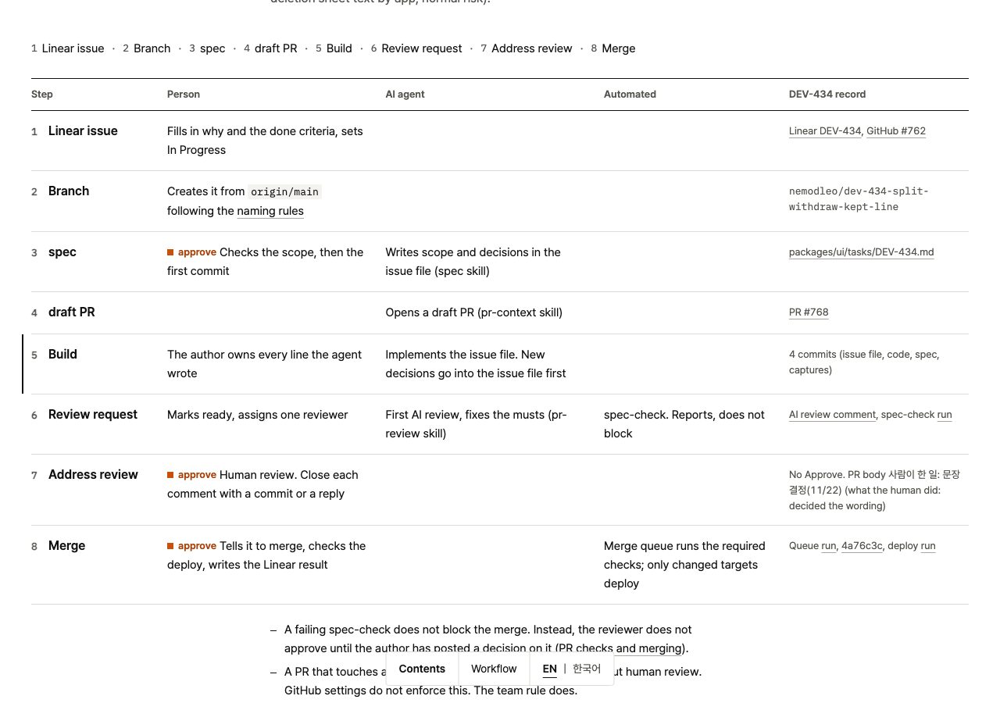
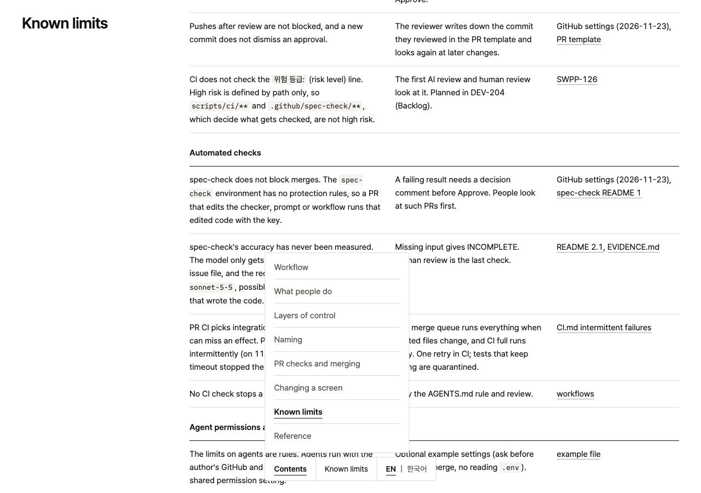


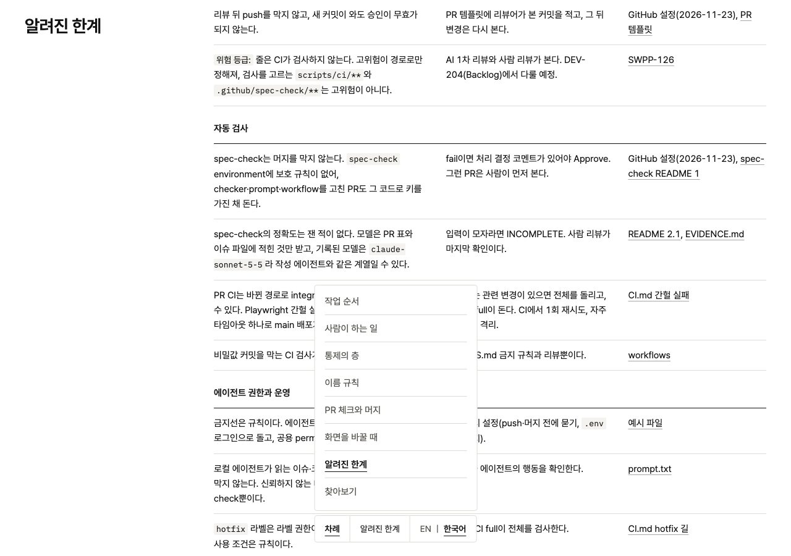
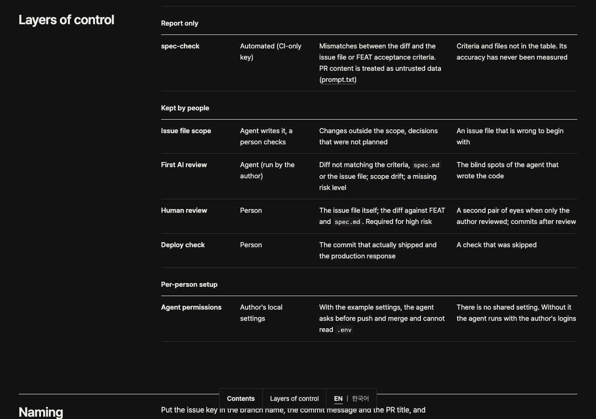
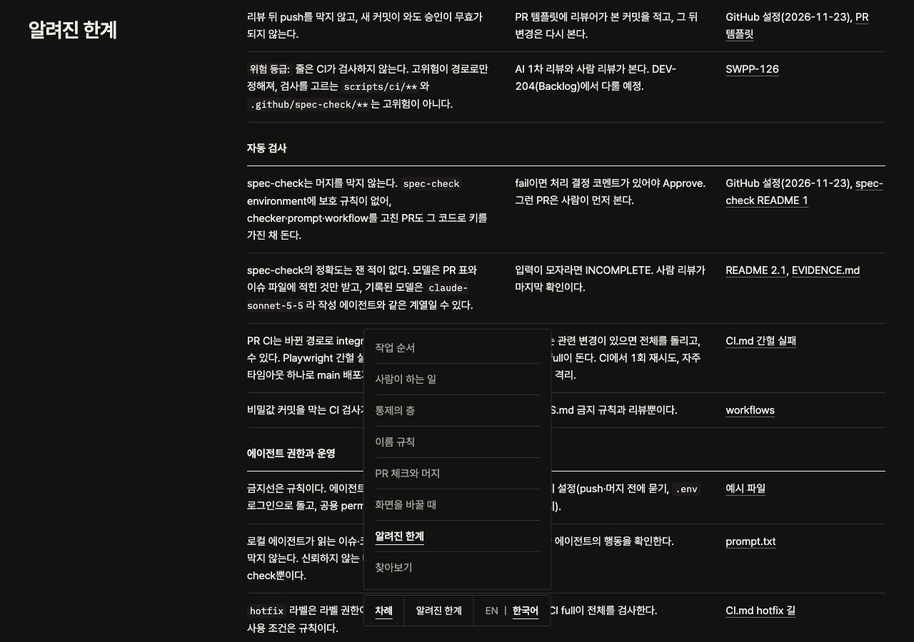
모서리 비교(같은 자리, 1:1)
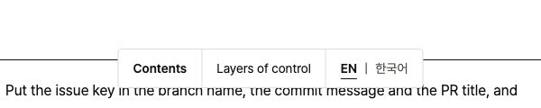
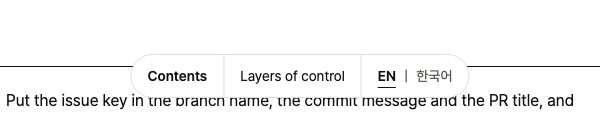
뺀 안: 오른쪽 위 묶음(11/27)
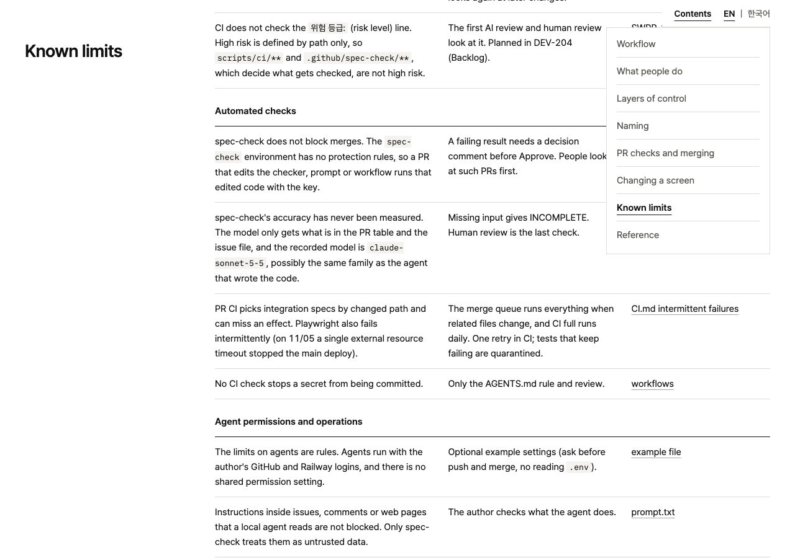
오너 요청은 "원하는 단계로 쉽게 가고, KO/EN 전환 UI"였다. 같은 날 영어판이 기본(/guide/)이 되고 한국어판은 /guide/ko/로 옮겼다. 색은 잉크와 가는 선만 쓰고, 주황은 계속 승인 표지에만 둔다.
1200px 이상: 화면 아래 22px(+안전 영역)에 가운데 정렬로 떠 있는 한 줄. "Contents · 지금 절 · EN | 한국어", 사이는 가는 선. 바탕색 면, 가는 선 테두리, 모서리 4, 그림자·아이콘 없음. Contents는 위로 열리는 264px 목록이고 고르면·Esc·바깥 클릭으로 닫힌다. JS 없이도 <details>.
가운데 칸이 "지금 어디"를 알려 준다: 절 이름, 작업 순서 표 안이면 "Workflow · 5 Build"처럼 단계까지. JS가 없으면 이 칸은 숨는다. 테두리만으로 표 행과 갈라져 보여 그림자는 넣지 않았다. 모서리는 4와 22(알약)를 같은 자리에서 찍어 보고, 각진 조판에 맞는 4를 골랐다.
페이지 아래 여백 160px로 마지막 줄과 꼬리말이 조작부 위로 올라온다. 탭 순서는 건너뛰기 링크 다음, 본문 앞(DOM에서 바가 먼저 오기 때문). 1200px 미만은 전과 같은 48px 위 바(차례 · 언어).
두 칸짜리 글자 링크. 지금 판은 잉크·밑줄, 다른 판은 회색 링크. 둘 다 실제 <a>에 hreflang·lang이라 JS 없이 이동한다. JS가 있으면 다른 판 링크에 지금 절이나 단계 id를 실어 같은 자리로 간다.
브라우저 언어로 옮기거나 선택을 저장하지 않는다. 공유한 링크는 누구에게나 같은 판이 열린다. hreflang alternate에 en, ko, x-default(영어판).
ko/ · ../작업 순서 표의 행에 step-1~step-8(두 판 같음). 행 번호가 자기 링크라 그대로 복사해 공유한다. 표 위에 "1 Linear issue · 2 Branch · … · 8 Merge" 한 줄. 본문의 3·7·8단계 언급도 그 행으로 가는 링크다.
링크로 온 행은 왼쪽 2px 잉크 선(:target). 주황은 쓰지 않는다. 390에서는 단계 줄을 두 줄로 감싸면 44px씩 네 줄이 돼 가로로 밀어 보게 했다.
모든 id에 scroll-margin-top: 64px(넓은 화면은 위에 붙는 것이 없어 24px), 고정되는 절 제목은 top: 68px(넓은 화면 24px). 처음엔 scroll-padding-top도 같이 둬 64px이 두 번 더해졌고(제목이 128px에 섬), 현재 절 표시가 한 칸 앞 절을 가리켰다. 하나만 남겼다.
1200px 미만은 48px 바에 페이지 이름(제목이 지나간 뒤), <details> 차례(Contents / 차례), 언어 바꾸기. 아이콘 없이 글자이고 열면 밑줄. 560px 이하는 페이지 이름을 숨긴다. 1200px 이상은 무브 1의 떠 있는 조작부. 1199와 1200에서 둘 중 하나만 보이는 것을 확인했다(1024도).
넓은 화면 위 바와 오른쪽 위 묶음은 뺐다. 바 링크 집합은 두 판 모두 차례 목록 하나다.
인쇄에서 바·조작부와 건너뛰기 링크를 숨기고 단계 줄은 링크 모양 없이. 어두운 테마는 기존 토큰만. prefers-reduced-motion이면 부드러운 스크롤을 끈다. 첫 탭은 "Skip to content / 본문으로 건너뛰기".
안에 넣은 스크립트 하나(외부 요청·저장 없음). JS가 꺼져도 차례·단계 링크는 모두 이동하고, 잃는 것은 현재 절 표시(가운데 칸), 제목 뒤 이름 숨김, 언어 링크의 위치 싣기뿐이다. check-guide 대조에 페이지 안 링크 집합을 더했고 id 대조가 단계 id를 포함한다.
| 항목 | 영어판 1280 · 1440 · 390 | 한국어판 1280 · 1440 · 390 |
|---|---|---|
| 차례 링크 여덟: 착지(위 바 아래, 조작부 위 화면 안), 고르면 닫힘, 지금 절 표시, Esc로 닫힘 | 8/8 · 8/8 · 8/8 | 8/8 · 8/8 · 8/8 |
| 바깥 클릭으로 닫힘 | 예 · 예 · 예 | 예 · 예 · 예 |
단계 링크(줄·번호·본문) 착지·:target | 21/21 · 21/21 · 21/21 | 21/21 · 21/21 · 21/21 |
| 페이지 안 앵커 전부 | 19/19 · 19/19 · 19/19 | 19/19 · 19/19 · 19/19 |
| #controls, #step-5에서 언어 바꾸기 | 같은 id, 화면 안(세 폭 모두) | 같은 id, 화면 안(세 폭 모두) |
| 가로 넘침 · 최소 글자 | 0 · 13 | 0 · 13 |
| JS 꺼짐(1280, 390) | 차례 열기·이동, 단계 줄 이동 모두 됨. 가운데 칸은 숨음 | |
| 인쇄 | 바·조작부·건너뛰기 숨김(두 판) | |









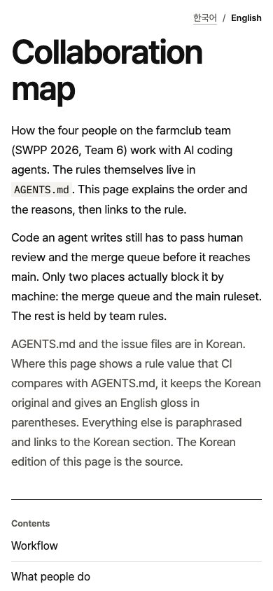


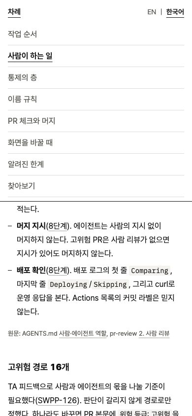